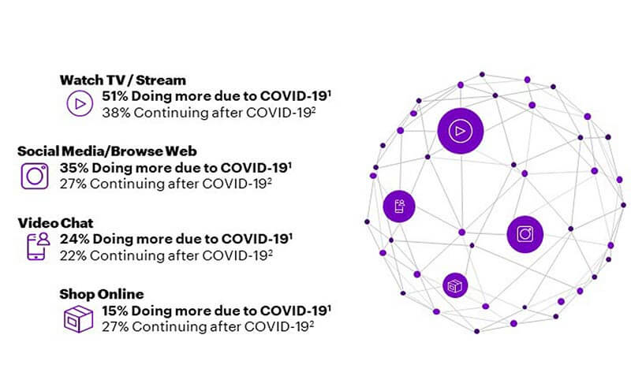
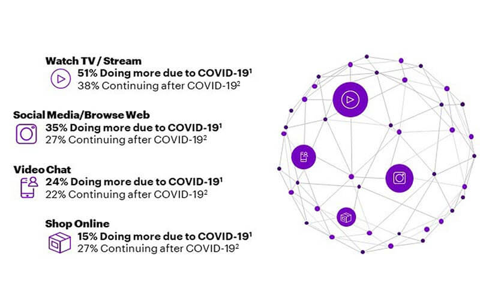

Digital platforms have also played a key role in India’s response to the covid crisis. Think of the MyGov Chatbot, which has provided validated information on key resources, or eSanjeevani, which has so far enabled 9 million telemedicine consultations, or CoWin, our vaccination gateway that has logged over 500 million vaccine doses.
First is the design principles: Affordability through low-cost development, interoperability with an API-driven backend, and the driving of large-scale reach. Secondly, access infrastructure: Mobile-first suitability even for the country’s non-smartphone segment, multi-lingual interfaces, and, most importantly, the leveraging of offline infrastructure of Common Service Centres in remote areas. Lastly, it is about innovation, enabling entrepreneurs to leverage these platforms and create truly unique solutions for India’s opportunities and challenges.
next page